Diese Onlinehilfe erklärt die Funktionsweise des Plug-ins Merkle-Hellman.
Inhaltsübersicht:
1) Schlüsselerzeugung
2) Verschlüsselung
3) Entschlüsselung
4) Bedeutung der Icons in der Menüleiste
5) Quellen
Das Plug-in lässt sich über das Menü Visualisierungen oder über den Krypto-Explorer im Tab Visualisierungen starten.
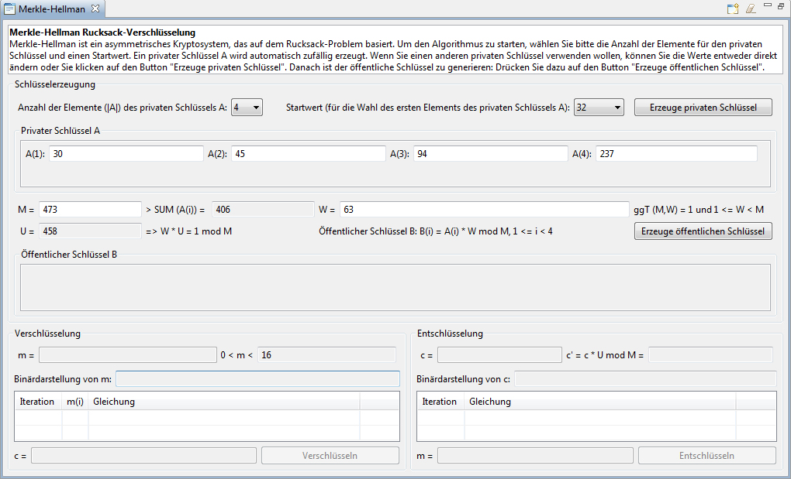
Das Plug-in besteht aus einem Beschreibungsfeld und drei Grundbereichen: Schlüsselerzeugung, Verschlüsselung und Entschlüsselung.
In dem Beschreibungsfeld werden dynamisch die entsprechenden Erklärungen über den Algorithmus in seinem Ablauf angezeigt, je nachdem in welchen Grund-Schritt der Benutzer sich befindet.
Dieser Bereich fasst die Aktionen zusammen, die zur Erzeugung eines privaten Schlüssels und eines öffentlichen Schlüssels benötigt werden.
Zu erst müssen die Anzahl der Elemente für den privaten Schlüssel und der Startwert über die Dropdown-Boxen ausgewählt werden. Standardmäßig hat die Anzahl der Schlüsselelemente den Wert 4 und der Startwert ist 32. Der Startwert wird für die Berechnung des ersten Schlüsselelements A(1) verwendet. Es wird eine Zufallszahl aus dem Bereich [Startwert/2 - Startwert] gewählt. Die Schlüsselelemente werden dann anhand der Benutzer-Eingaben dynamisch erzeugt.
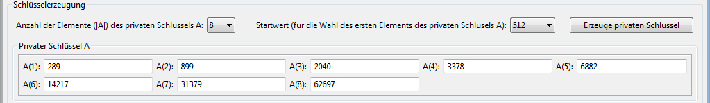
Der Benutzer kann nun die automatisch und zufällig generierten Beispielwerte für A(i), M und W verwenden, manuell bearbeiten bzw. verändern oder neue Werte per Klick auf den Button generieren lassen.
Wenn die vom Benutzer selbst eingegebenen privaten Schlüsselelemente A(i) keinen stark wachsenden Vektor bilden und der Benutzer auf den Button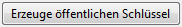klickt, erscheint der folgende Hinweis:
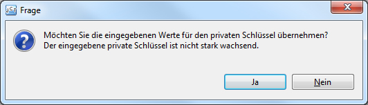
Auch für die Werte M und W werden die Bedingungen geprüft, wenn der Benutzer auf den Button klickt. Je nachdem, welche Bedingung verletzt ist, werden dem Benutzer entsprechende Hinweise angezeigt.
Für M <= SUM(A(i)) wird folgender Hinweis angezeigt:
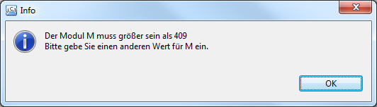
Für ggT(M,W) != 1 wird folgender Hinweis angezeigt:
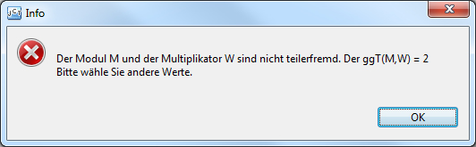
Nachdem nun alle Bedingungen erfüllt sind, wird der öffentliche Schlüssel erzeugt und die Elemente B(i) werden in dem Grundbereich Öffentlicher Schlüssel B angezeigt.
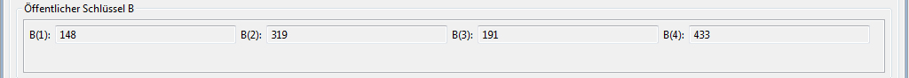
Nachdem nun die Schlüssel erzeugt sind, kann der Benutzer eine Nachricht m in das entsprechende Feld eingeben. Der Zahlenwert der Nachricht m wird auch im Zweiersystem berechnet und in dem Feld Binärdarstellung von m angezeigt. Der Button wird aktiv, sobald ein gültiger Wert m eingegeben wurde.
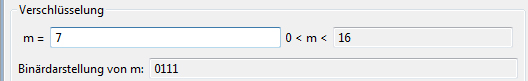
Beim Klick auf den Button werden die Nachrichten-Teile berechnet und die Iterationen der Berechnungen in die darunter liegende Tabelle eingetragen. Der Geheimtext wird ebenfalls berechnet, angezeigt und für die Entschlüsselung übernommen.
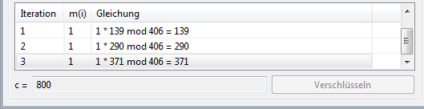
Für die Entschlüsselung kann man nun einen beliebigen Wert für c eingeben. Wieder wird die Binärdarstellung des eingegebenen Wertes dynamisch erzeugt und angezeigt.
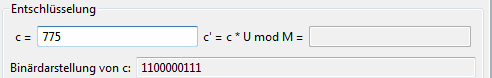
Durch einen Klick auf den Button wird der Geheimtext entschlüsselt und die Iterationen der Berechung werden in der Tabelle angezeigt. Nach der Entschlüsselung ist es möglich, andere Geheimtexte mit den gleichen Schlüsseln zu entschlüsseln.
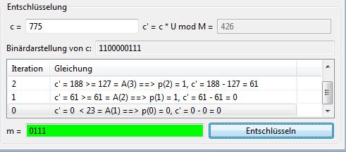
Für den Fall, dass die Entschlüsselung erfolgreich war, wird folgende Meldung angezeigt und sowohl der Klar- als auch der Gehmeimtext mit der Farbe grün hinterlegt.
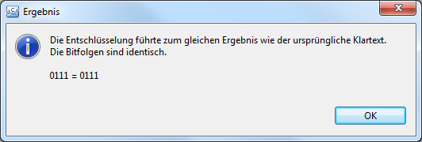
Andernfalls wird der Klar- und Geheimtext mit de Farbe rot hinterlegt und folgende Meldung angezeigt.
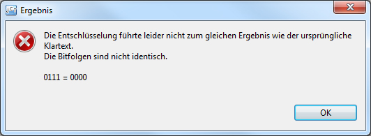
4) Bedeutung der Icons in der Menüleiste